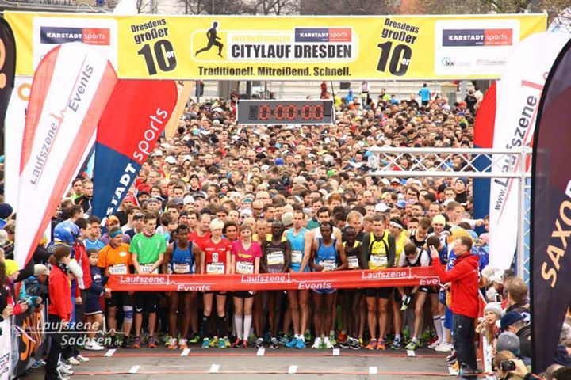

25. internationaler City Lauf
22.03.2015 - Dresden Innenstadt, Preis für Anmeldung: von 19,00€
Der Internationale KARSTADT Sports Citylauf Dresden eröffnet seit einem viertel Jahrhundert die sächsische Laufsaison
und ist eine der ersten großen Laufsportveranstaltungen der Landeshauptstadt. Mit dem Fokus auf die 10km IKK Classic Strecke
und den neuen Nissan 5km Lauf, die durch das historische Stadtzentrum Dresdens führen, bietet der Citylauf bestzeitenhungrigen Läufern,
als auch Hobbysportlern den idealen Start in das neue Laufjahr.
Weitere Informationen, sowie Anmeldung unter: www.citylauf-dresden.de
